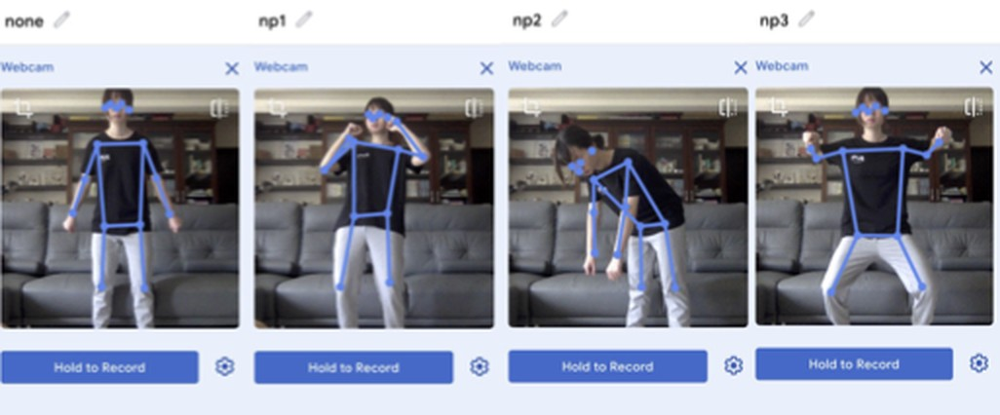
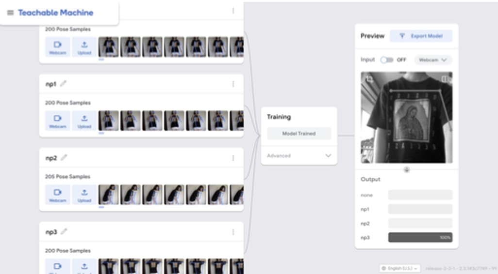
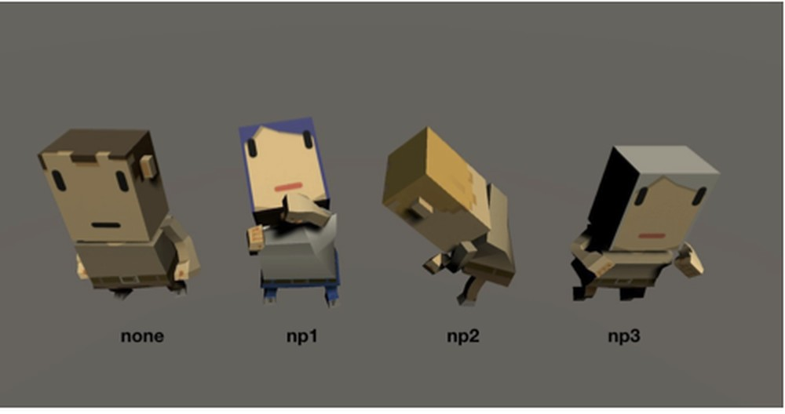

11 — 2021 — Machine-learning game · research demo
WHO GOD YOU基於機器學習之體感骨架辨識遊戲
以 Unity 與姿勢辨識模型製作的體感遊戲。A motion-based game built with Unity and a pose-recognition model.
遊戲機制參考《威利在哪裡》，但辨識目標不是衣著，而是姿勢。街道上有二十位低多邊形路人，其中一位擺出不同姿勢；玩家須在攝影機前做出相同姿勢，才能找出該角色。
Modelled on Where's Wally, the game identifies its target by posture rather than clothing. Twenty low-poly figures move along a street, one holding a different pose; players find it by performing the same pose in front of a webcam.
姿勢模型以 Teachable Machine 訓練，共四個類別（待機及三個關卡各一），即時串接至 Unity，無需手持控制器。三個關卡分別為後仰、前彎與半蹲，兼具伸展效果。
A pose model trained in Teachable Machine (four classes: idle plus one per level) streams into Unity, removing the need for a controller. The three levels use a back bend, a forward bend and a half squat, doubling as light stretching exercises.



- Medium
- Unity, Google Teachable Machine (pose model), webcam
- Team
- Two people
- Shown
- TAICHI 2021, 7th Taiwan CHI conference, Taipei — demo paper
- Engine
- Unity
- ML
- Teachable Machine pose classification
- Team
- Two-person project
- Venue
- TAICHI 2021